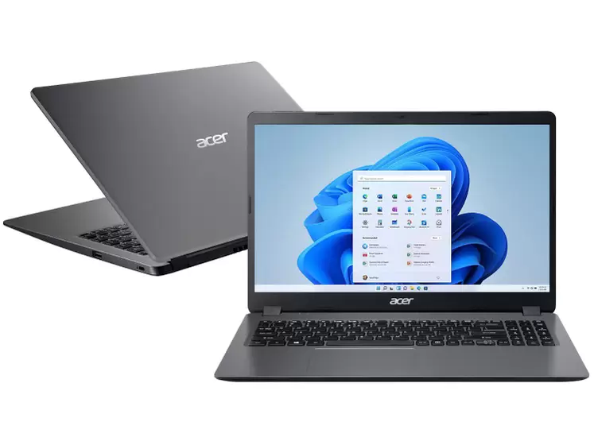

Descrição: Esse notebook tem i5 de 11ª geração e placa de vídeo dedicada GeForce MX350. É uma placa de entrada, podendo ser usada para jogos bem simples e leves. O armazenamento SSD de 256GB e a memória RAM de 8GB também ajudam ao oferecer um bom desempenho e espaço. O sistema operacional é o Windows 11.